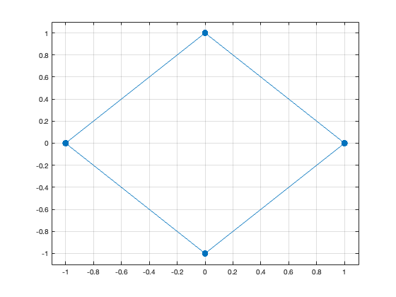
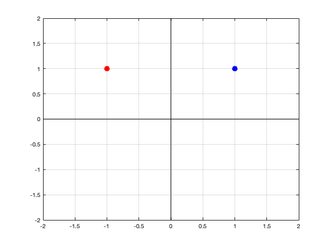

MATLAB programming course for beginners, supported by Wagatsuma Lab@Kyutech
/* The MIT License (MIT): Copyright (c) 2022 Hiroaki Wagatsuma and Wagatsuma Lab@Kyutech
Permission is hereby granted, free of charge, to any person obtaining a copy of this software and associated documentation files (the "Software"), to deal in the Software without restriction, including without limitation the rights to use, copy, modify, merge, publish, distribute, sublicense, and/or sell copies of the Software, and to permit persons to whom the Software is furnished to do so, subject to the following conditions:
The above copyright notice and this permission notice shall be included in all copies or substantial portions of the Software.
THE SOFTWARE IS PROVIDED "AS IS", WITHOUT WARRANTY OF ANY KIND, EXPRESS OR IMPLIED, INCLUDING BUT NOT LIMITED TO THE WARRANTIES OF MERCHANTABILITY, FITNESS FOR A PARTICULAR PURPOSE AND NONINFRINGEMENT. IN NO EVENT SHALL THE AUTHORS OR COPYRIGHT HOLDERS BE LIABLE FOR ANY CLAIM, DAMAGES OR OTHER LIABILITY, WHETHER IN AN ACTION OF CONTRACT, TORT OR OTHERWISE, ARISING FROM, OUT OF OR IN CONNECTION WITH THE SOFTWARE OR THE USE OR OTHER DEALINGS IN THE SOFTWARE. */
Contents
Specifications and requirements
- @Time : 2022-8-10
- @Author : Hiroaki Wagatsuma
- @Site : https://github.com/hirowgit/1A1_matlab_intermediate_course
- @IDE : MATLAB R2022a
- @File : lec0_step2.m
Main program
wd=4; % t=0:2*pi/wd:2*pi+2*pi/wd; t=0:2*pi/wd:2*pi; x=cos(t); y=sin(t); figure(3); clf; plot(x,y,'.-','MarkerSize',24); grid on; set(gca,'xlim',[-1.1 1.1],'ylim',[-1.1 1.1]); syms A [2 2] syms b [2 1] A*b Rt=@(th) [cos(th) -sin(th); sin(th) cos(th)]; xyD=[1;1]; xyD2=Rt(pi/2)*xyD; figure(4); clf; plot(xyD(1),xyD(2),'b.','MarkerSize',24),hold on; plot(xyD2(1),xyD2(2),'r.','MarkerSize',24),hold on; plot([-2 2],[0 0],'k-'); plot([0 0],[-2 2],'k-'); grid on;
ans = A1_1*b1 + A1_2*b2 A2_1*b1 + A2_2*b2 
Supplementary information to publish
If you want to make a pdf or html file on the code, you can use the code "x_publish_each_codes.m" in the same folder. Please change the file name as " this_file_tag='lec*_step*' " (* will be replaced to the number of the target file).
The code "x_publish_all_codes.m" works for such a publication applying to all codes in the same folder (Note: "x_publish_all_codes_sub.m" should be located in the same folder).